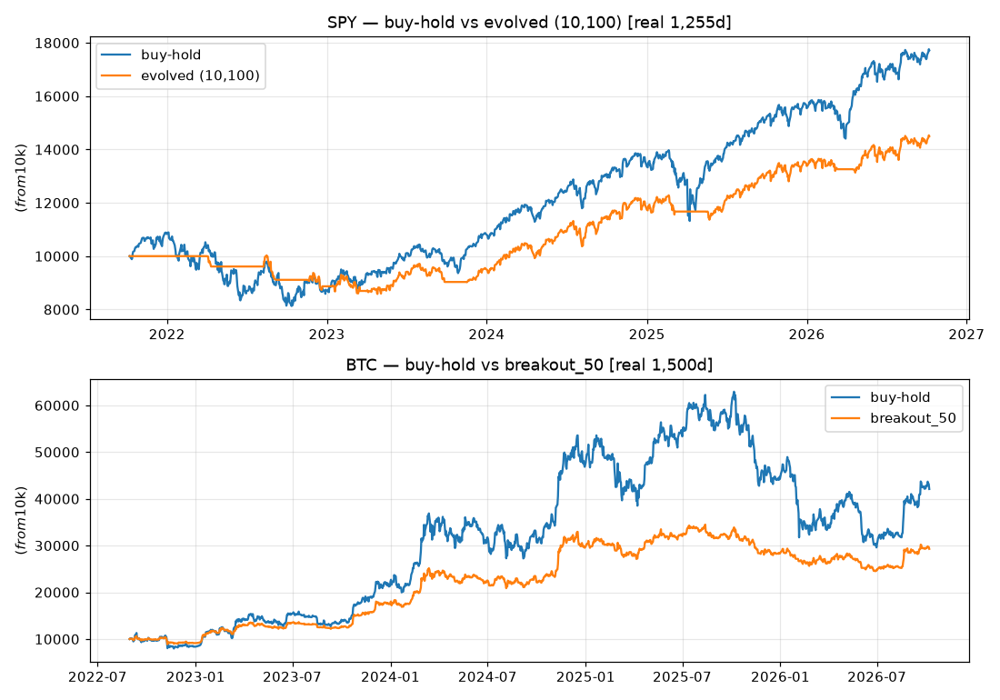
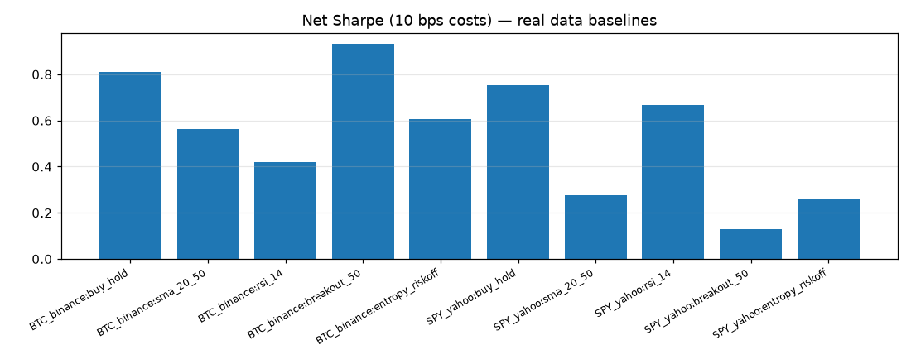
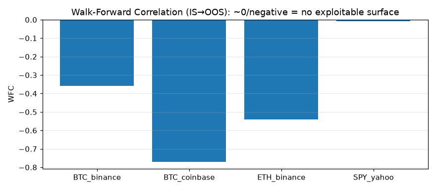

We built the viral "self-improving trading agent" — but attached a strict examiner. Tested on 4,605 real market bars (BTC · ETH · SPY, no API keys). Verdict: SPY improved Sharpe 0.28 → 0.76, and the agent honestly refused to "improve" crypto because the gains were luck. Refusing is intelligence.
Every number reproduces with bash scripts/run_all.sh. Costs: 10 bps per turnover. No synthetic prices.



▶️ 60-second tour: one command → the verdict → the quiz
Watch on YouTube Recording script (60s)
Maintainer: replace YOUR_VIDEO_ID with your upload + add docs/demo.mp4 to enable inline playback here.
docker compose up --build # or: pip install -r requirements.txt && bash scripts/run_all.sh # → results/self_improving_summary.csv (the verdict) # → results/ledger.json (the agent's memory)
src/baselines.py; the examiner tells you skill vs luck.| Viral claim | What we actually built |
|---|---|
| Accurate data | 4 free sources with fallback ladder; every fetch logged; decisions use yesterday's prices only. |
| Runs 24/7 | Docker service + scheduler pattern + append-only ledger + automatic kill-switch at −15%. |
| Clear goal | Written before trading: Sharpe ≥ 1.0 AND drawdown ≥ −15% — plus failure bands. |
| Learns from mistakes | Find worst 20 days → change ONE thing → exam on fresh data → keep or refuse. Refusing counts. |
Method motto: "Let's work this out in a step-by-step way to be sure we have the right answer." One variable, one outcome, one lesson.
Answer all 6. Explanations appear instantly. Score 6/6 and you can explain this repo to anyone.
Daily bars only · 10 bps costs (no market impact) · 27-point grid · single-asset books · hosting templated, not live money. Do not trade real capital on these baselines. This is a benchmark for learning — and learning includes learning when to say no.